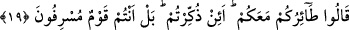

Önceden pislik içinde doğdukları için
Pislikte doğmuş olan kurt,
Hiçbir zaman ambere alışamaz
19. Elçiler şöyle cevap verdi: Sizin uğursuzluğunuz sizinle beraberdir. Size
nasihat ediliyorsa bu uğursuzluk mudur? Bilakis, siz aşırı giden bir milletsiniz.
Antakya halkına gönderilen “Elçiler şöyle cevap verdi: Sizin uğursuzluğunuz”un
sebebi bizim tarafımızdan değil “sizinle beraberdir.” Bu uğursuzluk sizin kötü inancınız
ve çirkin amellerinizdir.
“Size nasihat ediliyorsa” yâni mutluluğunuzu temin edecek konuda size öğüt veriliyor
ve korkutuluyorsanız “bu uğursuzluk mudur?” Yani eğer size öğüt verilirse bizi
uğursuz sayarsınız ya da taşlamak ve fena bir kötülük dokundurmakla tehdid edersiniz,
öyle mi?
“Bilakis, siz aşırı giden bir milletsiniz.” Bu ifâde, öğüt ve nasîhatin uğursuzluğa
sebep olması veya onların tehdidde bulunmasını doğru kılması mânâsından sözü
çevirmek içindir. Yâni iş sizin söylediğiniz gibi değildir. Bilakis siz isyanda ileri
gitmeyi ve isyan konusunda haddi aşmayı âdet edinmiş bir kavimsiniz. İşte bu yüzden
uğursuzluk size geldi. Ya da siz zulüm ve düşmanlıkta aşırı giden bir topluluksunuz. İşte
bu yüzden ikram edilmesi ve kendileriyle teberrük olunması gereken kimseleri tehdîd
ettiniz ve uğursuz saydınız.
Bu topluluk hakîkatte nefis ve sıfatlarıdır. Çünkü nefis tab’a muvâfakat ve Hakk’a
muhalefet etme konusunda aşırı gitmiştir. Böyle bir nefsin elinde olan herkes tehlikelere
düşmeye aldırış etmez. Bir de kendi girdiği şer yollarına sürekli diğer insanları da
çağırır.
Mizaç ve karakteri bozuk olan,
Hiç kimsenin sağlıklı olmasını istemez
Nefsinden kurtulup onu tezkiye edenin hem kendisi hem de ona tâbi olanlar kurtulur.
Bundan dolayı peygamberler ve veliler hep insanlara öğüt ve nasihat vermişler,
insanları hatalarını, aşırılıklarına karşı uyarmışlardır. Onları geçmişlerinin yanlış
yolundan çevirmişlerdir. Ancak öğüt yalnız mü’minlere fayda verir.
Hikâye edilir ki, Gulam Halîl sûfîleri Bağdat halifesine jurnalledi. ‘Onlar zındıktır.
Onları öldürürsen büyük sevap alırsın’ dedi. Halife onları huzuruna çağırttı. İçlerinde
Cüneyd, Şiblî ve Nûrî de vardı. Onların boyunlarının vurulmasını emretti. Boyunları